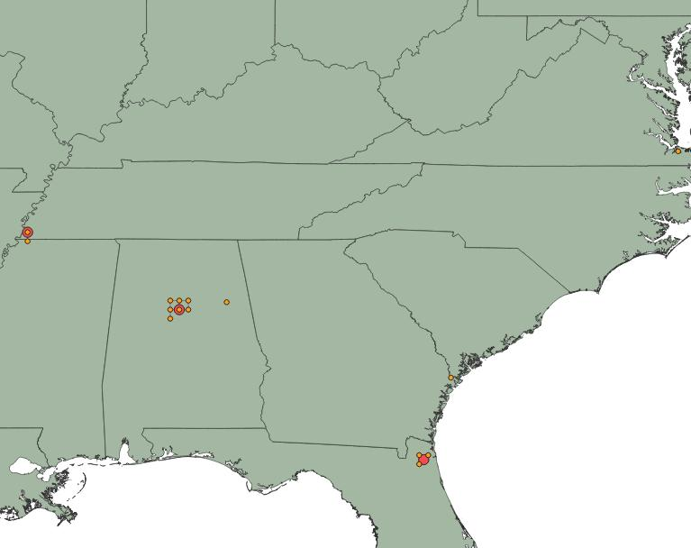

The dataset for used for this visualization is a subset of the larger dataset for my research project. Presented here is the collection of theatre sites that I have identified and confirmed the addresses. In total this includes sixteen sites across six southern states. Wihtin the map below, eleven sites are illustrated across four states, including Alabama, Florida, Geogia and Tenessese. However, this small subset of theatres broadly represents my time scale, with active sites ranging from 1892 through 1970.
| Site Name | City | State | Address | Year Opened | Year Closed | Latitude | Longitude |
|---|---|---|---|---|---|---|---|
| Frolic Theatre | Bessemer | AL | 1914 1st Avenue North | 1922 | 1954 | 33.4023320105451 | -86.9513544715537 |
| Famous Theatre | Bessemer | AL | 1917 North 4th Street | 1922 | 1970 | 33.5335441 | -86.8291495 |
| Frolic Theatre | Birmingham | AL | 312 North 18th Avenue | 1921 | 1950 | 33.51486 | -86.810498 |
| Gay Theatre | Birmingham | AL | 1722 North 4th Avenue | null | null | 33.5158085606852 | -86.8113893304979 |
| New Queen Theatre | Anniston | AL | 504 West 15th Street | 1924 | null | 33.6636403425998 | -85.8360534561686 |
| Queen Theatre | Birmingham | AL | 212 18th Street North | 1910 | null | 33.5144233922446 | -86.8094217525856 |
| Airdome Theatre | Jacksonville | FL | 601 West Ashley Street | 1909 | 1915 | 30.3327831453766 | -81.663928428704 |
| Bijou Theatre | Jacksonville | FL | 1615 West Ashley Street | 1908 | 1909 | 30.3327831453766 | -81.663928428704 |
| The Star Theatre | Savannah | GA | 508 West Broad Street | 1910 | 1930 | 32.0673452539849 | -81.0874127779103 |
| Auditorium Theatre | Memphis | TN | 191 Beale Street | 1892 | null | 35.1383617326113 | -90.0504384727952 |
| Gem Theatre | Memphis | TN | 258 North Main | 1900 | null | 35.1518824998277 | -90.0494762067462 |
This map visualization is styled using a cluster formation to provide a more clear visualization of the theatres that are located close proximity to one another. Without the cluster formation, it is difficult to read the quantitiy of theatres across this wide geographic span as many of them are located not only in the same city, but within minamal block radius.
